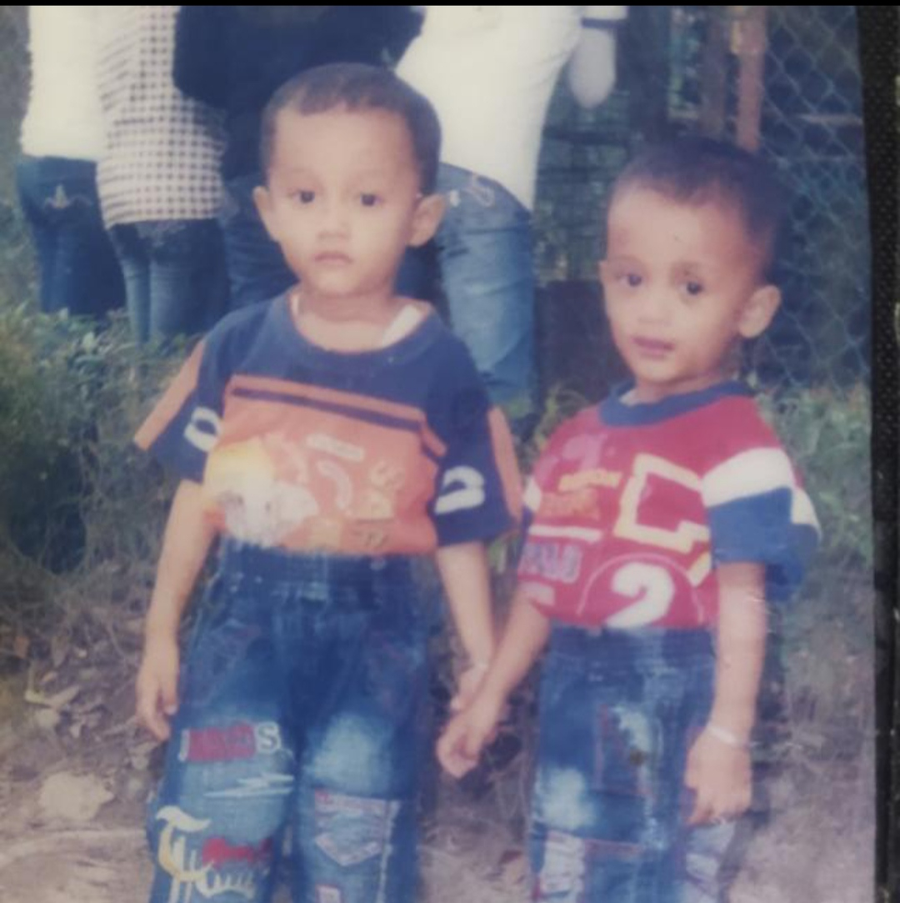
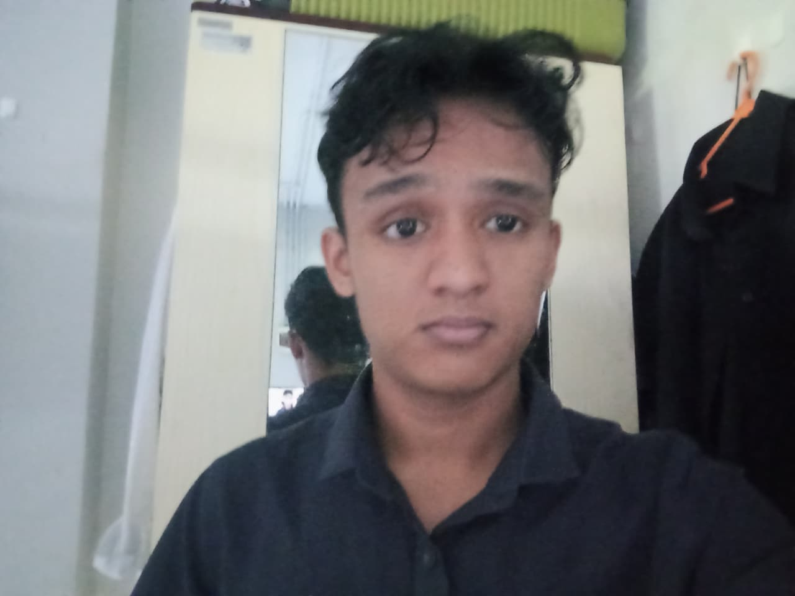
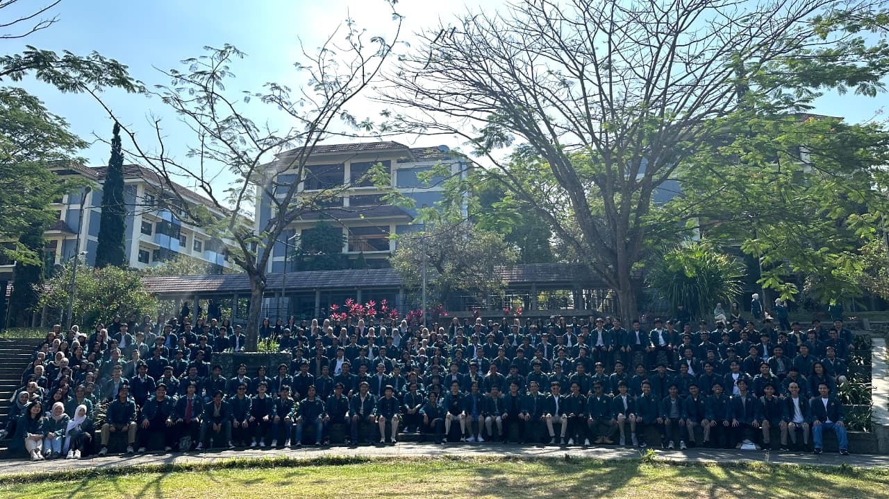
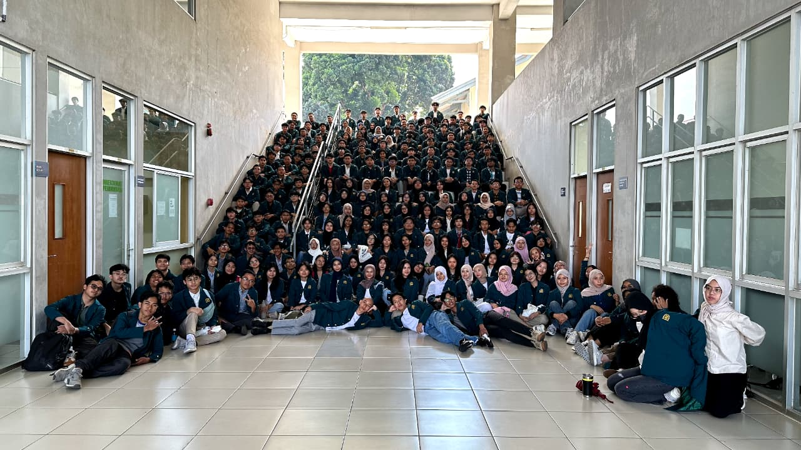
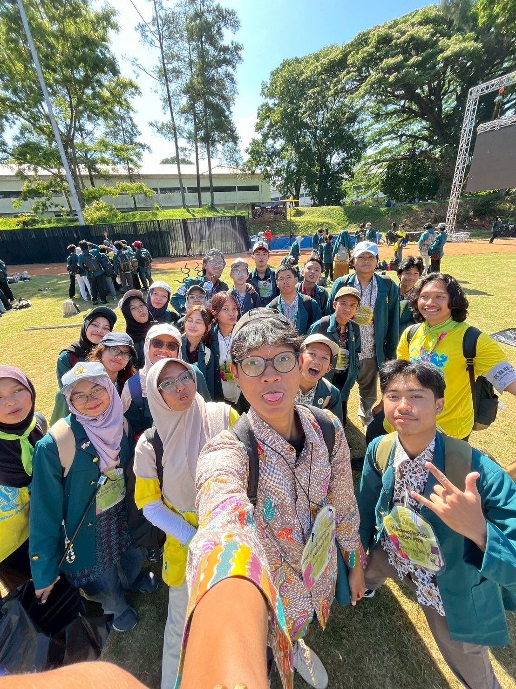
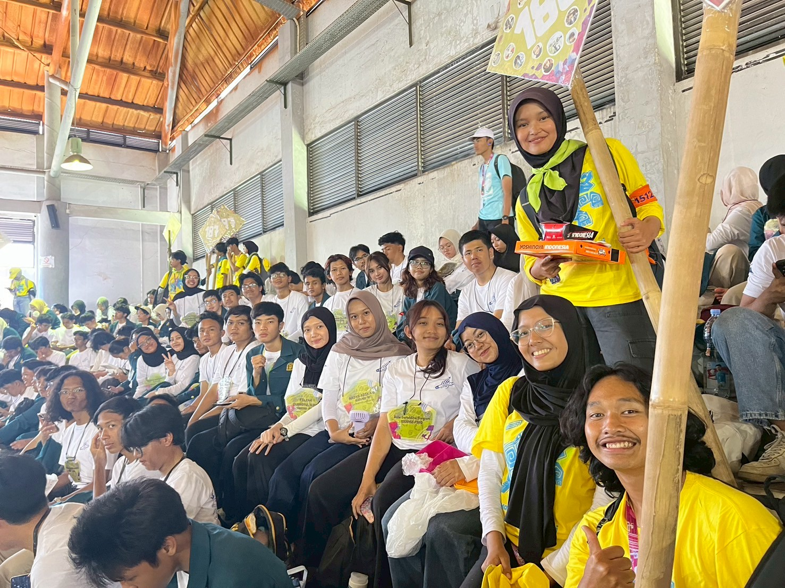
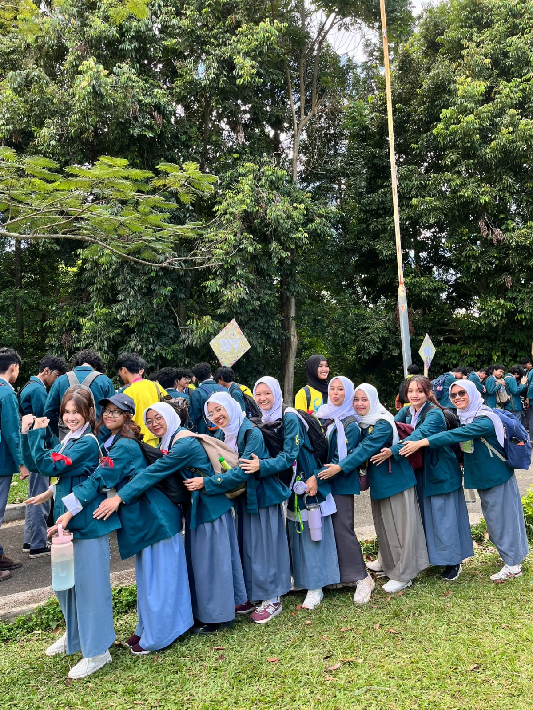
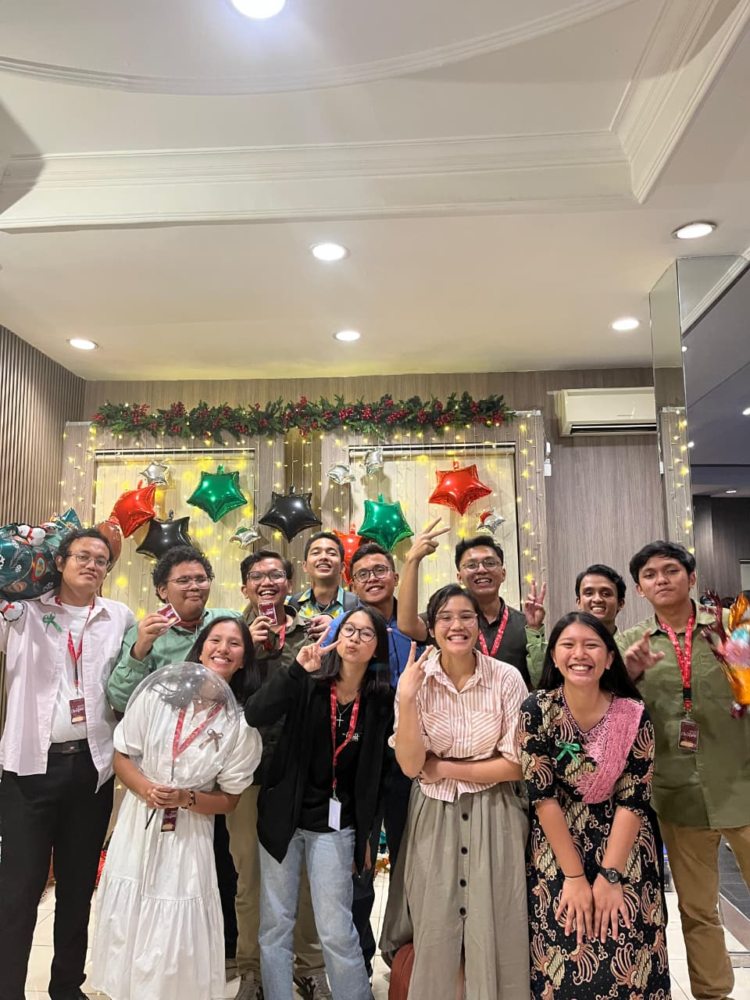
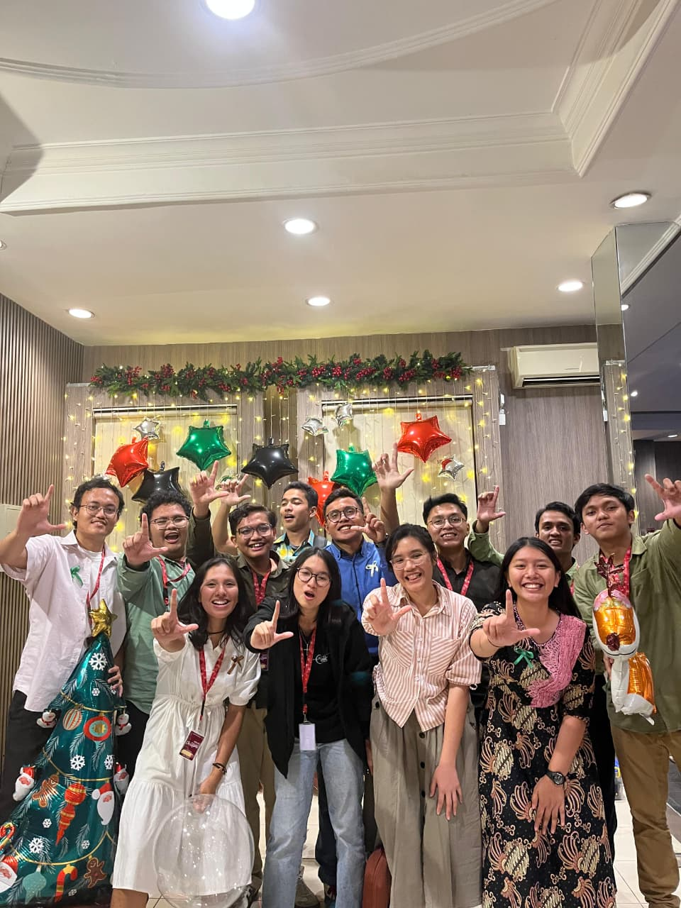
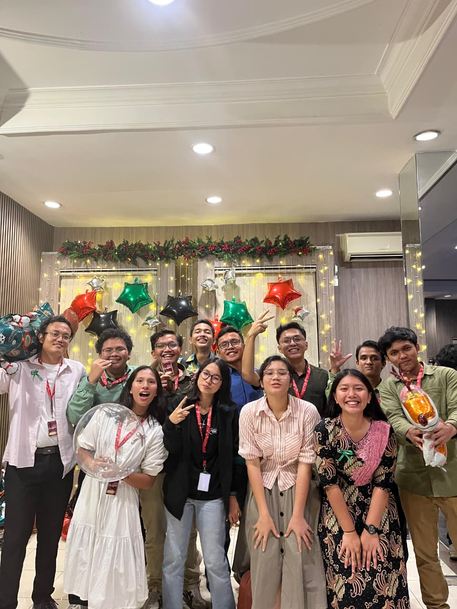

Sebuah diary digital berisi kumpulan momen @gernardosinaga
Terkadang kita mengunjungi tempat-tempat baru yang memberikan kesan mendalam. Di sinilah tempat aku menyimpan semua memori itu. Hidup sangat sayang kalau tidak didokumentasikan.

Time flies so fast, huh? ...



Salah satu core memory di ITB pastinya OSKM! Di OSKM ini, kami 20 orang dari berbagai fakultas digabungin jadi satu di Keluarga 186. Lucunya, kami punya mentor yang literally sebagai "orang tua kami", haha! Shoutout buat mentor-mentor kita: Mapus, Miwa, dan Pidun. Mereka ini bener-bener caring, super baik, dan kelakuannya selalu berhasil bikin kita ngakak. Such a fun time bisa jadi anak-anak mereka. Love you my keluarga 186!!!1



So, let me introduce you guys to "Laskar Kristus". Jujur namanya emang kedengaran agak intense ya, but it's actually just a fun bunch! Lingkaran pertemanan ini bermula dari hal yang sangat kebetulan: sebagian besar dari kami saling kenal karena ketemu di Persekutuan Mahasiswa Kristen tepatnya di House Of Joy. Awalnya cuma buat grup aja yang dinamain "Laskar Kristus" buat tempat chat-chatan tapi lama-kelamaan malah nyambung aja satu-sama lainnya. Dan yang membuatnya makin unik, kami semua ternyata orang Batak. Aku berharap dapat berteman baik dengan semuanya dan mau bertumbuh bersama di ITB sampai waktu memisahkan wkwk.



Akhirnya kesampaian juga proper photo bareng anak-anak Laskar di acara Natal PMK ITB kemarin, and honestly, the vibe was so warm and joyful. Di ibadah kemarin, kita dapet powerful reminder lewat khotbah dari Galatia 5:1, tentang bagaimana Kristus udah memerdekakan kita agar kita sungguh-sungguh bebas. Ayat itu bener-bener jadi good reality check buat kita semua untuk terus berdiri teguh dan nggak gampang goyah dalam iman. Bisa merayakan momen Natal seseru dan sehangat ini bareng mereka bener-bener bikin suasananya terasa makin meaningful. So grateful for this squad, and cheers to growing together in faith!
Nah, selanjutnya adalah perjalanan Laskar Kristus ke Pantai Santolo dan Guha!!
Memulai perjalanan ke Garut menuju Pantai Santolo dan Pantai Guha ini bener-bener jadi unforgettable road trip buat kita. Kita sengaja berangkat tengah malam, dan awalnya suasana di dalam mobil tuh super excited dan penuh canda tawa. Tapi vibes-nya lumayan berubah tegang pas kita mulai masuk ke area yang julukannya aja udah bikin merinding: "kelokan seribu". Jujur kita semua lowkey panik dan ketar-ketir, apalagi temen kita yang bawa mobil pengalamanya belum terlalu banyak buat menghadapi medan selika-liku itu. Akhirnya, biar aman, kita semua sepakat buat nahan ngantuk dan stay awake sepanjang jalan buat nemenin dia ngobrol, just to make sure dia tetep fokus dan puji Tuhan kita semua selamat sampai tujuan.
⬅ Kembali ke Layar Utama